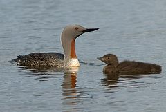
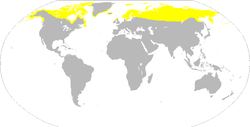

| Red-throated Loon |
|  |
| Adult in breeding plumage and recently hatched young |
| Conservation status |
|
|
| Binomial name |
Gavia stellata
(Pontoppidan, 1763) |
|  |
|
Breeding summer visitor, winters at sea
|
| Synonyms |
|
Colymbus stellatus Pontoppidan, 1763 Colymbus lumme Brünnich, 1764
Colymbus septentrionalis Linnaeus, 1766
Gavia lumme Forster, 1788
Colymbus mulleri Brehm, 1826
Urinator lumme Stejneger, 1882
|
The Red-throated Loon or Red-throated Diver (Gavia stellata), is a migratory aquatic bird found in the northern hemisphere; it breeds primarily in Arctic regions, and winters in northern coastal waters. It is the most widely distributed member of the loon or diver family. Ranging from 55–67 centimetres (22–26 in) in length, the Red-throated Loon is the smallest and lightest of the world's loons. In winter, it is a nondescript bird, greyish above fading to white below. During the breeding season, it acquires the distinctive reddish throat patch which is the basis for its common name. Fish form the bulk of its diet, though amphibians, invertebrates and plant material are sometimes eaten as well. A monogamous species, the Red-throated Loon forms long-term pair bonds. Both members of the pair help to build the nest, incubate the eggs (generally two per clutch) and feed the hatched young.
The Red-throated Loon has a large global population and a significant global range, though some populations are declining. Oil spills, habitat degradation, pollution and fishing nets are among the major threats this species faces. Natural predators—including various gull species, and both Red and Arctic Foxes, will take eggs and young. The species is protected by a number of international treaties.

{kind=link}
{kind=link}